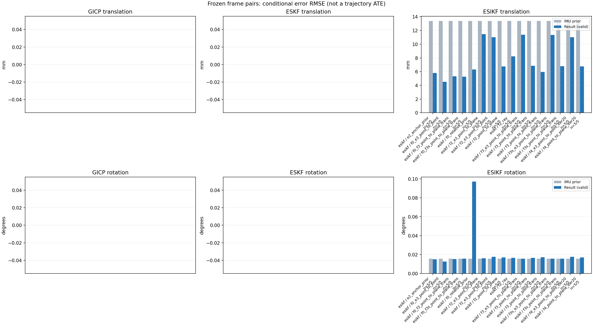

20261015_112757_right · depth=disparity_cache · cache=d0f33701dae42daf5d72
模型视差：/home/ubuntu22/slam/SIO_SLAM/models/tensorrt/disp_896x448_fp16.plan；engine SHA256=604cf6ac1f705c877260711730dd5d2d58c2a21f3020c03c668401ef7fb1e768。输入为生产裁剪与光照处理后的 RGB 0..255；此实验使用原始浮点像素视差，不应用完整前端的邻域视差后处理。
原始 ONNX SHA256：e9f49736a65d68d06681add463866b6defdf78fdd7f4f50f6cc941b682fdc0bc。
代价体图改写验证：ONNX Runtime 固定随机特征输入，最大绝对误差 0；该项检查图改写，完整模型精度仍需由录制数据评估。
配准代码版本：744ac2d993ae629b0cc44a3b1d995e04ab4fad48；观测生成版本：744ac2d993ae629b0cc44a3b1d995e04ab4fad48。
固定图像对与纯 IMU 先验；ESKF 回放固定 GICP 观测，ESIKF 直接读取点云。真值只用于此报告。
同时查看 converged 与 solver_status：上游默认 Stereo 在 max_iter / stopped_at_minimum 时也可能置 converged=true。valid 表示输入检查通过，不表示精度提升。欧氏 GICP 未提供独立的点距 RMSE，该列显示 NaN。
误差按每对图像的锚点计算，单位 m / degrees。此处 RMSE 不是全序列 ATE；末帧受同一锚点条件约束。NIS 与条件马氏距离是诊断量，少量相关图像对不能用于宣称协方差已校准。
全部指标 CSV · R / P 矩阵 CSV · Stereo 求解逐轮 CSV · ESIKF 逐轮轨迹 CSV · 末轮 H / R / K_pose 矩阵 CSV · 配置快照 · 矢量图
unflagged 排除纯惯性先验平移误差超过 50 mm 的图像对；whitened 为误差按协方差白化后的每自由度均值，协方差与实际误差相符时约为 1。prior_whitened 用真值误差只检验先验 P；NIS 为 ESIKF 首轮 rᵀ(P+R)⁻¹r，不用真值，检验的是 P+R 的总量，单靠它分不开 P 与 R，偏差、错误对应和线性化误差也会抬高它。观测方差超过先验方差 1e+04 倍的方向视为不可观，从 NIS 及其自由度中去掉（nis_dof）。一致时 nis_per_dof 均值约 1、nis_over_chi2_median 中位数约 1；帧对少且共享序列，超出 95% 分位的比例只作参考。
| stage | method | variant | valid | total | result_translation_rmse_m | result_rotation_rmse_deg | result_translation_median_m | result_rotation_median_deg | result_translation_rmse_unflagged_m | result_rotation_rmse_unflagged_deg | improved_translation | improved_rotation | posterior_whitened_by_P_rot_mean | posterior_whitened_by_P_trans_mean | prior_whitened_by_P_rot_mean | prior_whitened_by_P_trans_mean | nis_per_dof_mean | nis_over_chi2_median_median | nis_exceeds_chi2_95_fraction |
|---|---|---|---|---|---|---|---|---|---|---|---|---|---|---|---|---|---|---|---|
| esikf | esikf | e2_anchor_prior | 5 | 5 | 0.0058081 | 0.015081 | 0.0026698 | 0.013895 | 0.0058081 | 0.015081 | 3 | 2 | 28.708 | 98.279 | 27.758 | 36.605 | 7.5411 | 3.1403 | 0.6 |
| esikf | esikf | f0_e3_point_to_point | 5 | 5 | 0.004494 | 0.012603 | 0.0029457 | 0.0094224 | 0.004494 | 0.012603 | 3 | 3 | 0.94167 | 1.0984 | 0.91391 | 0.40558 | 0.091445 | 0.068455 | 0 |
| esikf | esikf | f0_f3_point_to_plane_trans | 5 | 5 | 0.0053299 | 0.015204 | 0.0037779 | 0.0098139 | 0.0053299 | 0.015204 | 3 | 4 | 0.91899 | 14.22 | 0.91391 | 0.40558 | 4.5437 | 2.641 | 0.4 |
| esikf | esikf | f0_f3s_point_to_plane_trans | 5 | 5 | 0.0052483 | 0.015574 | 0.0038493 | 0.0098191 | 0.0052483 | 0.015574 | 3 | 0 | 0.91391 | 13.871 | 0.91391 | 0.40558 | 4.5437 | 2.641 | 0.4 |
| esikf | esikf | f0_relative_prior | 5 | 5 | 0.0063008 | 0.097023 | 0.0034626 | 0.0090753 | 0.0063008 | 0.097023 | 3 | 2 | 56.839 | 63.761 | 0.91391 | 0.40558 | 2.2234 | 1.5923 | 0.2 |
| esikf | esikf | f2_e3_point_to_plane | 5 | 5 | 0.011455 | 0.016136 | 0.0040079 | 0.009797 | 0.011455 | 0.016136 | 4 | 4 | 27.886 | 36.418 | 27.758 | 36.605 | 0.51801 | 0.15227 | 0 |
| esikf | esikf | f2_e3_point_to_point | 5 | 5 | 0.01102 | 0.017499 | 0.0039625 | 0.0098535 | 0.01102 | 0.017499 | 5 | 3 | 27.935 | 39.374 | 27.758 | 36.605 | 0.21669 | 0.086159 | 0 |
| esikf | esikf | f2_point_to_plane | 5 | 5 | 0.006754 | 0.016852 | 0.0035463 | 0.0072128 | 0.006754 | 0.016852 | 3 | 2 | 29.64 | 32.642 | 27.758 | 36.605 | 8.8872 | 8.1306 | 0.6 |
| esikf | esikf | f2_ray | 5 | 5 | 0.0082295 | 0.016528 | 0.0054078 | 0.014748 | 0.0082295 | 0.016528 | 2 | 1 | 32.472 | 38.317 | 27.758 | 36.605 | 22.241 | 11.656 | 1 |
| esikf | esikf | f3_e3_point_to_plane_trans | 5 | 5 | 0.01136 | 0.01571 | 0.0040024 | 0.0099473 | 0.01136 | 0.01571 | 4 | 2 | 27.88 | 36.142 | 27.758 | 36.605 | 1.413 | 0.89188 | 0.2 |
| esikf | esikf | f3_point_to_plane_trans | 5 | 5 | 0.0068455 | 0.01647 | 0.0037639 | 0.012542 | 0.0068455 | 0.01647 | 3 | 1 | 30.764 | 34.287 | 27.758 | 36.605 | 22.609 | 6.3895 | 0.8 |
| esikf | esikf | f3_point_to_point_trans | 5 | 5 | 0.00595 | 0.017111 | 0.0065031 | 0.014701 | 0.00595 | 0.017111 | 2 | 1 | 33.785 | 149.72 | 27.758 | 36.605 | 6.311 | 2.267 | 0.2 |
| esikf | esikf | f3s_e3_point_to_plane_trans | 5 | 5 | 0.011344 | 0.015574 | 0.0040024 | 0.0098191 | 0.011344 | 0.015574 | 4 | 0 | 27.758 | 36.131 | 27.758 | 36.605 | 1.413 | 0.89188 | 0.2 |
| esikf | esikf | f3s_point_to_plane_trans | 5 | 5 | 0.0067839 | 0.015574 | 0.0037639 | 0.0098191 | 0.0067839 | 0.015574 | 3 | 0 | 27.758 | 33.958 | 27.758 | 36.605 | 22.609 | 6.3895 | 0.8 |
| esikf | esikf | f4_e3_point_to_point_iter20 | 5 | 5 | 0.01102 | 0.017499 | 0.0039625 | 0.0098535 | 0.01102 | 0.017499 | 5 | 3 | 27.935 | 39.374 | 27.758 | 36.605 | 0.21669 | 0.086159 | 0 |
| esikf | esikf | f4_point_to_plane_iter20 | 5 | 5 | 0.006754 | 0.016852 | 0.0035463 | 0.0072128 | 0.006754 | 0.016852 | 3 | 2 | 29.64 | 32.642 | 27.758 | 36.605 | 8.8872 | 8.1306 | 0.6 |

| stage | case | method | variant | status | solver_status | inliers | converged | covariance_convention | covariance_from_hessian | fitness | registration_rmse_m | prior_trans_error_m | result_trans_error_m | prior_rot_error_deg | result_rot_error_deg | prior_flagged | R_rot_trace_rad2 | R_pos_trace_m2 | nis_regularized | posterior_whitened_by_P_rot | posterior_whitened_by_P_trans | prior_whitened_by_P_rot | prior_whitened_by_P_trans | nis_per_dof | nis_dof |
|---|---|---|---|---|---|---|---|---|---|---|---|---|---|---|---|---|---|---|---|---|---|---|---|---|---|
| esikf | static_start | esikf | e2_anchor_prior | updated | converged | 15559 | 1 | 1 | 0 | 0 | 8.5313e-05 | 0.00045666 | 0.00090396 | 0.011558 | 0 | 1.3695e-07 | 9.5352e-07 | nan | 2.0914 | 1.6427 | 0.0073999 | 0.061779 | 1.7014 | 6 | |
| esikf | static_start | esikf | f0_relative_prior | updated | converged | 15560 | 1 | 1 | 0 | 0 | 8.5313e-05 | 0.0011443 | 0.00090396 | 0.0082262 | 0 | 1.3666e-07 | 9.4908e-07 | nan | 0.92108 | 2.1281 | 0.007395 | 0.035385 | 1.4193 | 6 | |
| esikf | static_start | esikf | f2_point_to_plane | updated | converged | 15559 | 1 | 1 | 0 | 0 | 8.5313e-05 | 0.00026984 | 0.00090396 | 0.005484 | 0 | 8.514e-07 | 3.6474e-06 | nan | 0.30713 | 0.43853 | 0.0073999 | 0.061779 | 1.8929 | 6 | |
| esikf | static_start | esikf | f2_ray | updated | converged | 15559 | 1 | 1 | 0 | 0 | 8.5313e-05 | 0.0004059 | 0.00090396 | 0.0063133 | 0 | 0.012949 | 1.4752e-05 | nan | 0.39428 | 1.0039 | 0.0073999 | 0.061779 | 4.1532 | 3 | |
| esikf | static_start | esikf | f3_point_to_point_trans | updated | converged | 15559 | 1 | 1 | 0 | 0 | 8.5313e-05 | 0.00030956 | 0.00090396 | 0.0053021 | 0 | 0.13695 | 9.5336e-07 | nan | 0.33466 | 0.80985 | 0.0073999 | 0.061779 | 1.2527 | 3 | |
| esikf | static_start | esikf | f3_point_to_plane_trans | updated | converged | 15559 | 1 | 1 | 0 | 0 | 8.5313e-05 | 0.00024779 | 0.00090396 | 0.0037588 | 0 | 0.85148 | 3.6486e-06 | nan | 0.13759 | 0.3687 | 0.0073999 | 0.061779 | 4.2195 | 3 | |
| esikf | static_start | esikf | f0_f3_point_to_plane_trans | updated_not_converged | max_iterations | 15538 | 0 | 1 | 0 | 0 | 8.5313e-05 | 0.0028454 | 0.00090396 | 0.00090595 | 0 | 0.84527 | 3.6165e-06 | nan | 0.0074279 | 4.9605 | 0.007395 | 0.035385 | 2.0829 | 3 | |
| esikf | static_start | esikf | f3s_point_to_plane_trans | updated | converged | 15559 | 1 | 1 | 0 | 0 | 8.5313e-05 | 0.00024759 | 0.00090396 | 0.00090396 | 0 | 0.85139 | 3.6475e-06 | nan | 0.0073999 | 0.36773 | 0.0073999 | 0.061779 | 4.2195 | 3 | |
| esikf | static_start | esikf | f0_f3s_point_to_plane_trans | updated_not_converged | max_iterations | 15538 | 0 | 1 | 0 | 0 | 8.5313e-05 | 0.0028454 | 0.00090396 | 0.00090396 | 0 | 0.84527 | 3.6165e-06 | nan | 0.007395 | 4.9605 | 0.007395 | 0.035385 | 2.0829 | 3 | |
| esikf | static_start | esikf | f4_point_to_plane_iter20 | updated | converged | 15559 | 1 | 1 | 0 | 0 | 8.5313e-05 | 0.00026984 | 0.00090396 | 0.005484 | 0 | 8.514e-07 | 3.6474e-06 | nan | 0.30713 | 0.43853 | 0.0073999 | 0.061779 | 1.8929 | 6 | |
| esikf | static_start | esikf | f2_e3_point_to_point | updated | converged | 15559 | 1 | 1 | 0 | 0 | 8.5313e-05 | 8.3761e-05 | 0.00090396 | 0.00090248 | 0 | 1.5228e-05 | 7.9288e-05 | nan | 0.0074281 | 0.059775 | 0.0073999 | 0.061779 | 0.028306 | 6 | |
| esikf | static_start | esikf | f0_e3_point_to_point | updated | converged | 15560 | 1 | 1 | 0 | 0 | 8.5313e-05 | 0.0010323 | 0.00090396 | 0.00085732 | 0 | 1.5196e-05 | 7.8912e-05 | nan | 0.0066824 | 0.060931 | 0.007395 | 0.035385 | 0.01819 | 6 | |
| esikf | static_start | esikf | f2_e3_point_to_plane | updated | converged | 15559 | 1 | 1 | 0 | 0 | 8.5313e-05 | 8.6749e-05 | 0.00090396 | 0.0008411 | 0 | 4.9757e-05 | 0.00013107 | nan | 0.0064151 | 0.061997 | 0.0073999 | 0.061779 | 0.060722 | 5 | |
| esikf | static_start | esikf | f3_e3_point_to_plane_trans | updated | converged | 15559 | 1 | 1 | 0 | 0 | 8.5313e-05 | 8.5716e-05 | 0.00090396 | 0.00083103 | 0 | 0.85157 | 0.00013107 | nan | 0.0062575 | 0.060069 | 0.0073999 | 0.061779 | 0.12676 | 3 | |
| esikf | static_start | esikf | f3s_e3_point_to_plane_trans | updated | converged | 15559 | 1 | 1 | 0 | 0 | 8.5313e-05 | 8.5716e-05 | 0.00090396 | 0.00090396 | 0 | 0.85157 | 0.00013107 | nan | 0.0073999 | 0.060069 | 0.0073999 | 0.061779 | 0.12676 | 3 | |
| esikf | static_start | esikf | f4_e3_point_to_point_iter20 | updated | converged | 15559 | 1 | 1 | 0 | 0 | 8.5313e-05 | 8.3761e-05 | 0.00090396 | 0.00090248 | 0 | 1.5228e-05 | 7.9288e-05 | nan | 0.0074281 | 0.059775 | 0.0073999 | 0.061779 | 0.028306 | 6 | |
| esikf | sync_motion | esikf | e2_anchor_prior | updated | converged | 16420 | 1 | 1 | 0 | 0 | 0.00089766 | 0.0026698 | 0.0098191 | 0.0089275 | 0 | 1.3021e-07 | 9.2196e-07 | nan | 14.265 | 17.54 | 3.6476 | 0.34606 | 2.7991 | 6 | |
| esikf | sync_motion | esikf | f0_relative_prior | updated_not_converged | max_iterations | 16443 | 0 | 1 | 0 | 0 | 0.00089766 | 0.0034626 | 0.0098191 | 0.0045319 | 0 | 1.2987e-07 | 9.1679e-07 | nan | 0.29464 | 16.657 | 0.87164 | 0.23997 | 1.7432 | 6 | |
| esikf | sync_motion | esikf | f2_point_to_plane | updated | converged | 16470 | 1 | 1 | 0 | 0 | 0.00089766 | 0.0011121 | 0.0098191 | 0.0072128 | 0 | 8.8111e-07 | 3.6226e-06 | nan | 7.1286 | 0.87762 | 3.6476 | 0.34606 | 12.441 | 6 | |
| esikf | sync_motion | esikf | f2_ray | updated | converged | 16423 | 1 | 1 | 0 | 0 | 0.00089766 | 0.0054078 | 0.0098191 | 0.014748 | 0 | 0.0096056 | 1.1576e-05 | nan | 26.051 | 24.777 | 3.6476 | 0.34606 | 9.1931 | 3 | |
| esikf | sync_motion | esikf | f3_point_to_point_trans | updated_not_converged | max_iterations | 16384 | 0 | 1 | 0 | 0 | 0.00089766 | 0.0065031 | 0.0098191 | 0.014701 | 0 | 0.12999 | 9.0594e-07 | nan | 32.82 | 164.73 | 3.6476 | 0.34606 | 2.506 | 3 | |
| esikf | sync_motion | esikf | f3_point_to_plane_trans | updated | converged | 16367 | 1 | 1 | 0 | 0 | 0.00089766 | 0.0032648 | 0.0098191 | 0.012542 | 0 | 0.89185 | 3.7078e-06 | nan | 17.699 | 10.527 | 3.6476 | 0.34606 | 15.974 | 3 | |
| esikf | sync_motion | esikf | f0_f3_point_to_plane_trans | updated_not_converged | max_iterations | 16376 | 0 | 1 | 0 | 0 | 0.00089766 | 0.0044294 | 0.0098191 | 0.0098139 | 0 | 0.88198 | 3.623e-06 | nan | 0.87209 | 15.393 | 0.87164 | 0.23997 | 15.133 | 3 | |
| esikf | sync_motion | esikf | f3s_point_to_plane_trans | updated | converged | 16370 | 1 | 1 | 0 | 0 | 0.00089766 | 0.0032905 | 0.0098191 | 0.0098191 | 0 | 0.88999 | 3.6997e-06 | nan | 3.6476 | 10.277 | 3.6476 | 0.34606 | 15.974 | 3 | |
| esikf | sync_motion | esikf | f0_f3s_point_to_plane_trans | updated_not_converged | max_iterations | 16376 | 0 | 1 | 0 | 0 | 0.00089766 | 0.0044282 | 0.0098191 | 0.0098191 | 0 | 0.88198 | 3.623e-06 | nan | 0.87164 | 15.385 | 0.87164 | 0.23997 | 15.133 | 3 | |
| esikf | sync_motion | esikf | f4_point_to_plane_iter20 | updated | converged | 16470 | 1 | 1 | 0 | 0 | 0.00089766 | 0.0011121 | 0.0098191 | 0.0072128 | 0 | 8.8111e-07 | 3.6226e-06 | nan | 7.1286 | 0.87762 | 3.6476 | 0.34606 | 12.441 | 6 | |
| esikf | sync_motion | esikf | f2_e3_point_to_point | updated | converged | 16435 | 1 | 1 | 0 | 0 | 0.00089766 | 0.00083677 | 0.0098191 | 0.0098535 | 0 | 1.4398e-05 | 7.5535e-05 | nan | 4.0232 | 0.30707 | 3.6476 | 0.34606 | 0.074984 | 5 | |
| esikf | sync_motion | esikf | f0_e3_point_to_point | updated | converged | 16437 | 1 | 1 | 0 | 0 | 0.00089766 | 0.0029457 | 0.0098191 | 0.0094224 | 0 | 1.4417e-05 | 7.5788e-05 | nan | 0.81555 | 0.31673 | 0.87164 | 0.23997 | 0.061018 | 6 | |
| esikf | sync_motion | esikf | f2_e3_point_to_plane | updated | converged | 16435 | 1 | 1 | 0 | 0 | 0.00089766 | 0.00086482 | 0.0098191 | 0.009797 | 0 | 5.2025e-05 | 0.00013134 | nan | 3.9296 | 0.31496 | 3.6476 | 0.34606 | 0.12778 | 4 | |
| esikf | sync_motion | esikf | f3_e3_point_to_plane_trans | updated | converged | 16425 | 1 | 1 | 0 | 0 | 0.00089766 | 0.00071918 | 0.0098191 | 0.0099473 | 0 | 0.88712 | 0.00013057 | nan | 4.103 | 0.2419 | 3.6476 | 0.34606 | 0.7034 | 3 | |
| esikf | sync_motion | esikf | f3s_e3_point_to_plane_trans | updated | converged | 16424 | 1 | 1 | 0 | 0 | 0.00089766 | 0.00071864 | 0.0098191 | 0.0098191 | 0 | 0.88704 | 0.00013058 | nan | 3.6476 | 0.24178 | 3.6476 | 0.34606 | 0.7034 | 3 | |
| esikf | sync_motion | esikf | f4_e3_point_to_point_iter20 | updated | converged | 16435 | 1 | 1 | 0 | 0 | 0.00089766 | 0.00083677 | 0.0098191 | 0.0098535 | 0 | 1.4398e-05 | 7.5535e-05 | nan | 4.0232 | 0.30707 | 3.6476 | 0.34606 | 0.074984 | 5 | |
| esikf | main_motion | esikf | e2_anchor_prior | updated_not_converged | max_iterations | 20150 | 0 | 1 | 0 | 0 | 0.0040306 | 0.0021607 | 0.019163 | 0.019925 | 0 | 9.358e-08 | 9.6967e-07 | nan | 101.93 | 9.698 | 101.89 | 11.768 | 1.3518 | 6 | |
| esikf | main_motion | esikf | f0_relative_prior | updated_not_converged | max_iterations | 20125 | 0 | 1 | 0 | 0 | 0.0040306 | 0.0019127 | 0.019163 | 0.0090753 | 0 | 9.3872e-08 | 9.787e-07 | nan | 1.8573 | 5.2959 | 3.3227 | 0.6159 | 0.58432 | 6 | |
| esikf | main_motion | esikf | f2_point_to_plane | updated | converged | 20212 | 1 | 1 | 0 | 0 | 0.0040306 | 0.0035463 | 0.019163 | 0.0187 | 0 | 7.5393e-07 | 4.0165e-06 | nan | 101.95 | 14.925 | 101.89 | 11.768 | 0.72396 | 6 | |
| esikf | main_motion | esikf | f2_ray | updated | converged | 20229 | 1 | 1 | 0 | 0 | 0.0040306 | 0.0043348 | 0.019163 | 0.019274 | 0 | 0.0073542 | 1.9352e-05 | nan | 101.69 | 19.44 | 101.89 | 11.768 | 7.5464 | 3 | |
| esikf | main_motion | esikf | f3_point_to_point_trans | updated_not_converged | max_iterations | 20216 | 0 | 1 | 0 | 0 | 0.0040306 | 0.0065276 | 0.019163 | 0.019241 | 0 | 0.093015 | 9.5533e-07 | nan | 101.55 | 193.29 | 101.89 | 11.768 | 1.7879 | 3 | |
| esikf | main_motion | esikf | f3_point_to_plane_trans | updated | converged | 20212 | 1 | 1 | 0 | 0 | 0.0040306 | 0.0037639 | 0.019163 | 0.01917 | 0 | 0.75268 | 4.0356e-06 | nan | 101.87 | 16.704 | 101.89 | 11.768 | 2.3521 | 3 | |
| esikf | main_motion | esikf | f0_f3_point_to_plane_trans | updated_not_converged | max_iterations | 20196 | 0 | 1 | 0 | 0 | 0.0040306 | 0.0037779 | 0.019163 | 0.0191 | 0 | 0.7558 | 4.0521e-06 | nan | 3.3526 | 6.8046 | 3.3227 | 0.6159 | 1.0532 | 3 | |
| esikf | main_motion | esikf | f3s_point_to_plane_trans | updated | converged | 20213 | 1 | 1 | 0 | 0 | 0.0040306 | 0.0037639 | 0.019163 | 0.019163 | 0 | 0.75268 | 4.0356e-06 | nan | 101.89 | 16.704 | 101.89 | 11.768 | 2.3521 | 3 | |
| esikf | main_motion | esikf | f0_f3s_point_to_plane_trans | updated_not_converged | max_iterations | 20198 | 0 | 1 | 0 | 0 | 0.0040306 | 0.0038493 | 0.019163 | 0.019163 | 0 | 0.7556 | 4.0472e-06 | nan | 3.3227 | 7.1748 | 3.3227 | 0.6159 | 1.0532 | 3 | |
| esikf | main_motion | esikf | f4_point_to_plane_iter20 | updated | converged | 20212 | 1 | 1 | 0 | 0 | 0.0040306 | 0.0035463 | 0.019163 | 0.0187 | 0 | 7.5393e-07 | 4.0165e-06 | nan | 101.95 | 14.925 | 101.89 | 11.768 | 0.72396 | 6 | |
| esikf | main_motion | esikf | f2_e3_point_to_point | updated | converged | 20252 | 1 | 1 | 0 | 0 | 0.0040306 | 0.0039625 | 0.019163 | 0.01915 | 0 | 1.017e-05 | 7.6597e-05 | nan | 102.12 | 12.008 | 101.89 | 11.768 | 0.076339 | 6 | |
| esikf | main_motion | esikf | f0_e3_point_to_point | updated_not_converged | max_iterations | 20168 | 0 | 1 | 0 | 0 | 0.0040306 | 0.0026025 | 0.019163 | 0.019412 | 0 | 1.0319e-05 | 7.9133e-05 | nan | 3.5612 | 0.54808 | 3.3227 | 0.6159 | 0.056774 | 6 | |
| esikf | main_motion | esikf | f2_e3_point_to_plane | updated | converged | 20263 | 1 | 1 | 0 | 0 | 0.0040306 | 0.0040079 | 0.019163 | 0.019155 | 0 | 4.3569e-05 | 0.00013963 | nan | 101.91 | 11.856 | 101.89 | 11.768 | 0.035577 | 4 | |
| esikf | main_motion | esikf | f3_e3_point_to_plane_trans | updated | converged | 20263 | 1 | 1 | 0 | 0 | 0.0040306 | 0.0040024 | 0.019163 | 0.019164 | 0 | 0.74566 | 0.00013963 | nan | 101.89 | 11.819 | 101.89 | 11.768 | 0.12742 | 3 | |
| esikf | main_motion | esikf | f3s_e3_point_to_plane_trans | updated | converged | 20263 | 1 | 1 | 0 | 0 | 0.0040306 | 0.0040024 | 0.019163 | 0.019163 | 0 | 0.74566 | 0.00013963 | nan | 101.89 | 11.819 | 101.89 | 11.768 | 0.12742 | 3 | |
| esikf | main_motion | esikf | f4_e3_point_to_point_iter20 | updated | converged | 20252 | 1 | 1 | 0 | 0 | 0.0040306 | 0.0039625 | 0.019163 | 0.01915 | 0 | 1.017e-05 | 7.6597e-05 | nan | 102.12 | 12.008 | 101.89 | 11.768 | 0.076339 | 6 | |
| esikf | main_motion_long | esikf | e2_anchor_prior | updated_not_converged | max_iterations | 17188 | 0 | 1 | 0 | 0 | 0.02491 | 0.0066139 | 0.02698 | 0.01827 | 0 | 1.2118e-07 | 9.7288e-07 | nan | 14.472 | 114.87 | 27.683 | 12.03 | 17.246 | 6 | |
| esikf | main_motion_long | esikf | f0_relative_prior | updated_not_converged | max_iterations | 17012 | 0 | 1 | 0 | 0 | 0.02491 | 0.010986 | 0.02698 | 0.21442 | 0 | 1.2526e-07 | 1.04e-06 | nan | 269.64 | 146.32 | 0.18382 | 0.66874 | 1.2266 | 6 | |
| esikf | main_motion_long | esikf | f2_point_to_plane | updated | converged | 17144 | 1 | 1 | 0 | 0 | 0.02491 | 0.0096764 | 0.02698 | 0.030822 | 0 | 8.9613e-07 | 4.0806e-06 | nan | 31.695 | 27.437 | 27.683 | 12.03 | 7.2472 | 6 | |
| esikf | main_motion_long | esikf | f2_ray | updated_not_converged | max_iterations | 17148 | 0 | 1 | 0 | 0 | 0.02491 | 0.014147 | 0.02698 | 0.026686 | 0 | 0.0046151 | 6.1391e-05 | nan | 28 | 51.309 | 27.683 | 12.03 | 20.697 | 4 | |
| esikf | main_motion_long | esikf | f3_point_to_point_trans | updated_not_converged | max_iterations | 17062 | 0 | 1 | 0 | 0 | 0.02491 | 0.0038349 | 0.02698 | 0.02882 | 0 | 0.12345 | 1.0358e-06 | nan | 28.577 | 58.01 | 27.683 | 12.03 | 1.4834 | 3 | |
| esikf | main_motion_long | esikf | f3_point_to_plane_trans | updated_not_converged | max_iterations | 17229 | 0 | 1 | 0 | 0 | 0.02491 | 0.01003 | 0.02698 | 0.028235 | 0 | 0.89064 | 3.9161e-06 | nan | 28.244 | 41.813 | 27.683 | 12.03 | 5.0392 | 3 | |
| esikf | main_motion_long | esikf | f0_f3_point_to_plane_trans | updated_not_converged | max_iterations | 17207 | 0 | 1 | 0 | 0 | 0.02491 | 0.0093671 | 0.02698 | 0.025968 | 0 | 0.88703 | 3.9355e-06 | nan | 0.17309 | 34.039 | 0.18382 | 0.66874 | 1.0016 | 3 | |
| esikf | main_motion_long | esikf | f3s_point_to_plane_trans | updated_not_converged | max_iterations | 17246 | 0 | 1 | 0 | 0 | 0.02491 | 0.0098229 | 0.02698 | 0.02698 | 0 | 0.89069 | 3.8953e-06 | nan | 27.683 | 40.496 | 27.683 | 12.03 | 5.0392 | 3 | |
| esikf | main_motion_long | esikf | f0_f3s_point_to_plane_trans | updated_not_converged | max_iterations | 17200 | 0 | 1 | 0 | 0 | 0.02491 | 0.0091614 | 0.02698 | 0.02698 | 0 | 0.88813 | 3.9429e-06 | nan | 0.18382 | 32.809 | 0.18382 | 0.66874 | 1.0016 | 3 | |
| esikf | main_motion_long | esikf | f4_point_to_plane_iter20 | updated | converged | 17144 | 1 | 1 | 0 | 0 | 0.02491 | 0.0096764 | 0.02698 | 0.030822 | 0 | 8.9613e-07 | 4.0806e-06 | nan | 31.695 | 27.437 | 27.683 | 12.03 | 7.2472 | 6 | |
| esikf | main_motion_long | esikf | f2_e3_point_to_point | updated | converged | 17253 | 1 | 1 | 0 | 0 | 0.02491 | 0.01839 | 0.02698 | 0.032348 | 0 | 1.3627e-05 | 8.2191e-05 | nan | 27.876 | 18.427 | 27.683 | 12.03 | 0.36487 | 6 | |
| esikf | main_motion_long | esikf | f0_e3_point_to_point | updated_not_converged | max_iterations | 17160 | 0 | 1 | 0 | 0 | 0.02491 | 0.0056417 | 0.02698 | 0.017425 | 0 | 1.3529e-05 | 8.1443e-05 | nan | 0.085367 | 1.3781 | 0.18382 | 0.66874 | 0.16803 | 6 | |
| esikf | main_motion_long | esikf | f2_e3_point_to_plane | updated | converged | 17244 | 1 | 1 | 0 | 0 | 0.02491 | 0.01968 | 0.02698 | 0.028608 | 0 | 5.2315e-05 | 0.00014033 | nan | 27.974 | 12.476 | 27.683 | 12.03 | 0.85866 | 5 | |
| esikf | main_motion_long | esikf | f3_e3_point_to_plane_trans | updated | converged | 17244 | 1 | 1 | 0 | 0 | 0.02491 | 0.019435 | 0.02698 | 0.027333 | 0 | 0.89414 | 0.00013982 | nan | 27.835 | 12.19 | 27.683 | 12.03 | 2.4479 | 3 | |
| esikf | main_motion_long | esikf | f3s_e3_point_to_plane_trans | updated | converged | 17247 | 1 | 1 | 0 | 0 | 0.02491 | 0.019388 | 0.02698 | 0.02698 | 0 | 0.89453 | 0.00013974 | nan | 27.683 | 12.14 | 27.683 | 12.03 | 2.4479 | 3 | |
| esikf | main_motion_long | esikf | f4_e3_point_to_point_iter20 | updated | converged | 17253 | 1 | 1 | 0 | 0 | 0.02491 | 0.01839 | 0.02698 | 0.032348 | 0 | 1.3627e-05 | 8.2191e-05 | nan | 27.876 | 18.427 | 27.683 | 12.03 | 0.36487 | 6 | |
| esikf | static_end | esikf | e2_anchor_prior | updated | converged | 19938 | 1 | 1 | 0 | 0 | 0.0161 | 0.010627 | 0.0045092 | 0.013895 | 0 | 7.0008e-08 | 9.1033e-07 | nan | 10.786 | 347.64 | 5.5613 | 158.82 | 14.607 | 6 | |
| esikf | static_end | esikf | f0_relative_prior | updated_not_converged | max_iterations | 19927 | 0 | 1 | 0 | 0 | 0.0161 | 0.0078011 | 0.0045092 | 0.03035 | 0 | 7.0232e-08 | 9.1319e-07 | nan | 11.483 | 148.4 | 0.18397 | 0.46793 | 6.1436 | 6 | |
| esikf | static_end | esikf | f2_point_to_plane | updated | converged | 19886 | 1 | 1 | 0 | 0 | 0.0161 | 0.01098 | 0.0045092 | 0.0061745 | 0 | 7.2458e-07 | 4.6059e-06 | nan | 7.1188 | 119.53 | 5.5613 | 158.82 | 22.131 | 6 | |
| esikf | static_end | esikf | f2_ray | updated | converged | 19901 | 1 | 1 | 0 | 0 | 0.0161 | 0.0095015 | 0.0045092 | 0.0049816 | 0 | 0.017377 | 1.7018e-05 | nan | 6.2266 | 95.053 | 5.5613 | 158.82 | 69.614 | 3 | |
| esikf | static_end | esikf | f3_point_to_point_trans | updated_not_converged | max_iterations | 19824 | 0 | 1 | 0 | 0 | 0.0161 | 0.0087925 | 0.0045092 | 0.0043439 | 0 | 0.070366 | 9.2807e-07 | nan | 5.6475 | 331.76 | 5.5613 | 158.82 | 24.525 | 3 | |
| esikf | static_end | esikf | f3_point_to_plane_trans | updated | converged | 19867 | 1 | 1 | 0 | 0 | 0.0161 | 0.010431 | 0.0045092 | 0.0044846 | 0 | 0.72591 | 4.6314e-06 | nan | 5.8723 | 102.02 | 5.5613 | 158.82 | 85.459 | 3 | |
| esikf | static_end | esikf | f0_f3_point_to_plane_trans | updated_not_converged | max_iterations | 19818 | 0 | 1 | 0 | 0 | 0.0161 | 0.003508 | 0.0045092 | 0.0044228 | 0 | 0.75397 | 4.7437e-06 | nan | 0.18975 | 9.9061 | 0.18397 | 0.46793 | 3.4482 | 3 | |
| esikf | static_end | esikf | f3s_point_to_plane_trans | updated | converged | 19870 | 1 | 1 | 0 | 0 | 0.0161 | 0.010419 | 0.0045092 | 0.0045092 | 0 | 0.72632 | 4.6362e-06 | nan | 5.5613 | 101.95 | 5.5613 | 158.82 | 85.459 | 3 | |
| esikf | static_end | esikf | f0_f3s_point_to_plane_trans | updated_not_converged | max_iterations | 19834 | 0 | 1 | 0 | 0 | 0.0161 | 0.003357 | 0.0045092 | 0.0045092 | 0 | 0.75218 | 4.7253e-06 | nan | 0.18397 | 9.0263 | 0.18397 | 0.46793 | 3.4482 | 3 | |
| esikf | static_end | esikf | f4_point_to_plane_iter20 | updated | converged | 19886 | 1 | 1 | 0 | 0 | 0.0161 | 0.01098 | 0.0045092 | 0.0061745 | 0 | 7.2458e-07 | 4.6059e-06 | nan | 7.1188 | 119.53 | 5.5613 | 158.82 | 22.131 | 6 | |
| esikf | static_end | esikf | f2_e3_point_to_point | updated | converged | 20031 | 1 | 1 | 0 | 0 | 0.0161 | 0.015892 | 0.0045092 | 0.0044764 | 0 | 7.7075e-06 | 7.4037e-05 | nan | 5.6466 | 166.07 | 5.5613 | 158.82 | 0.53894 | 5 | |
| esikf | static_end | esikf | f0_e3_point_to_point | updated_not_converged | max_iterations | 19884 | 0 | 1 | 0 | 0 | 0.0161 | 0.0072549 | 0.0045092 | 0.0049225 | 0 | 7.8125e-06 | 7.5859e-05 | nan | 0.23951 | 3.1883 | 0.18397 | 0.46793 | 0.15321 | 6 | |
| esikf | static_end | esikf | f2_e3_point_to_plane | updated | converged | 20033 | 1 | 1 | 0 | 0 | 0.0161 | 0.015873 | 0.0045092 | 0.0044613 | 0 | 4.0989e-05 | 0.00015522 | nan | 5.6036 | 157.38 | 5.5613 | 158.82 | 1.5073 | 4 | |
| esikf | static_end | esikf | f3_e3_point_to_plane_trans | updated | converged | 20027 | 1 | 1 | 0 | 0 | 0.0161 | 0.015844 | 0.0045092 | 0.0044809 | 0 | 0.70211 | 0.0001553 | nan | 5.5678 | 156.4 | 5.5613 | 158.82 | 3.6597 | 3 | |
| esikf | static_end | esikf | f3s_e3_point_to_plane_trans | updated | converged | 20029 | 1 | 1 | 0 | 0 | 0.0161 | 0.015844 | 0.0045092 | 0.0045092 | 0 | 0.70221 | 0.00015527 | nan | 5.5613 | 156.4 | 5.5613 | 158.82 | 3.6597 | 3 | |
| esikf | static_end | esikf | f4_e3_point_to_point_iter20 | updated | converged | 20031 | 1 | 1 | 0 | 0 | 0.0161 | 0.015892 | 0.0045092 | 0.0044764 | 0 | 7.7075e-06 | 7.4037e-05 | nan | 5.6466 | 166.07 | 5.5613 | 158.82 | 0.53894 | 5 |